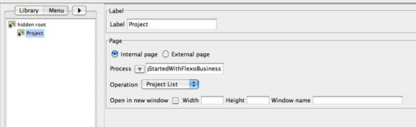

Browser that allows the definition of the Menu hierarchy of the
application.
Select and create the Menu hierarchy in the
left browser and associated menu with Workflow Operation screens
in the central panel. Menu can be associated with internal or external
page. For Internal pages select the associated Process, Operation
and Default tabs when necessary.

For
external pages, just give the associated url.